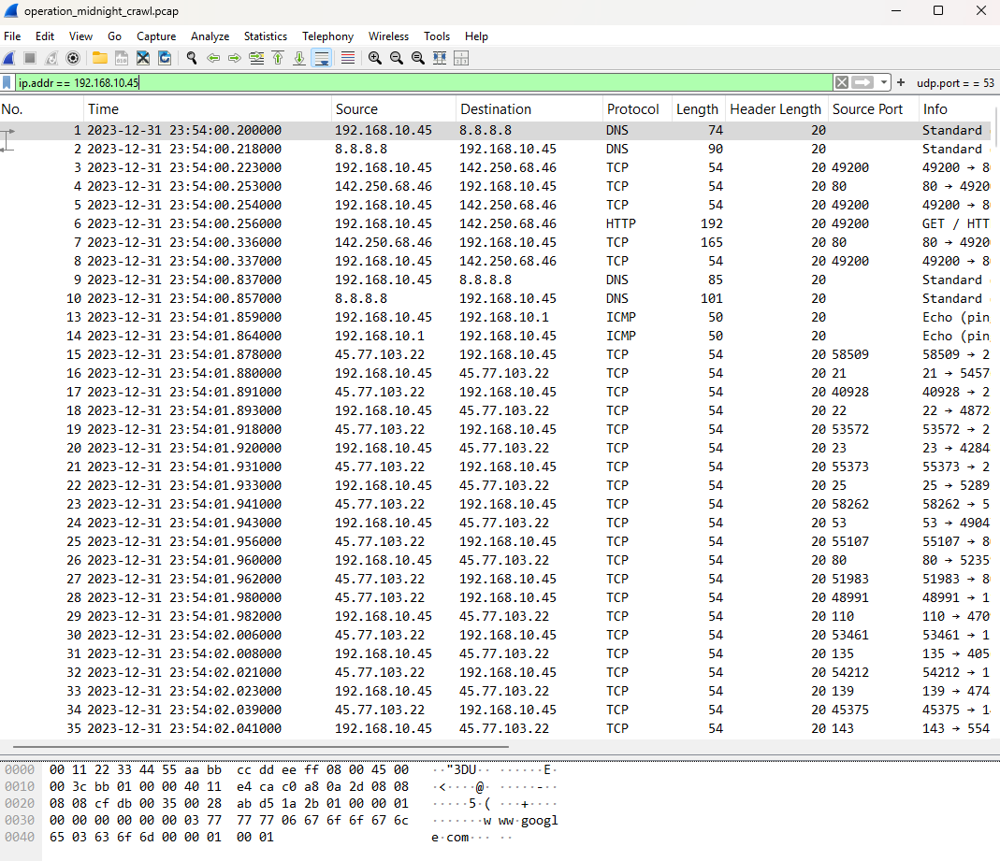
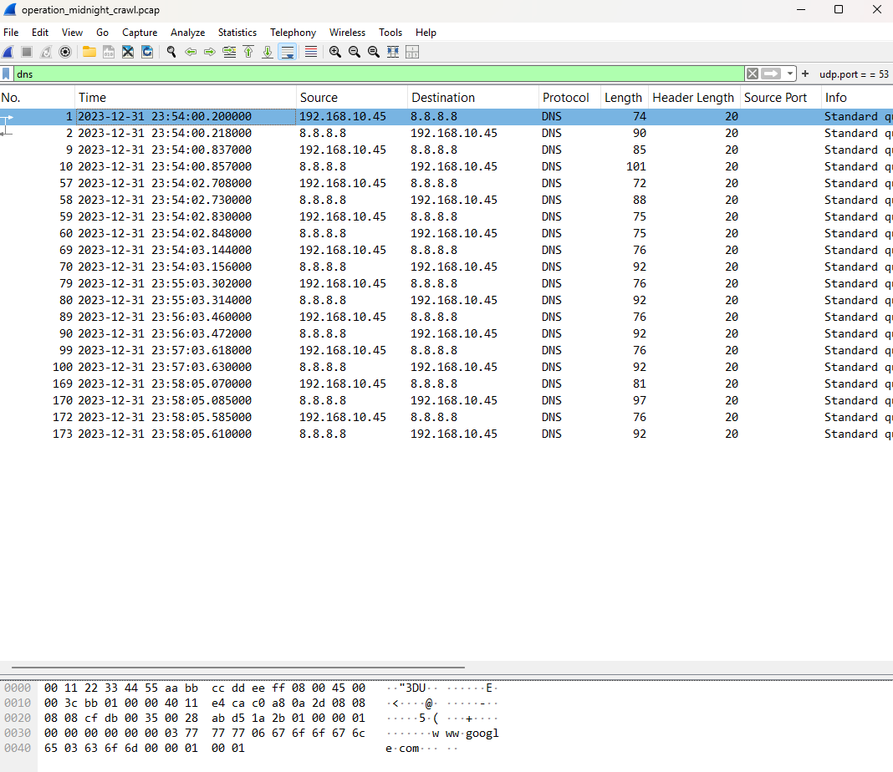
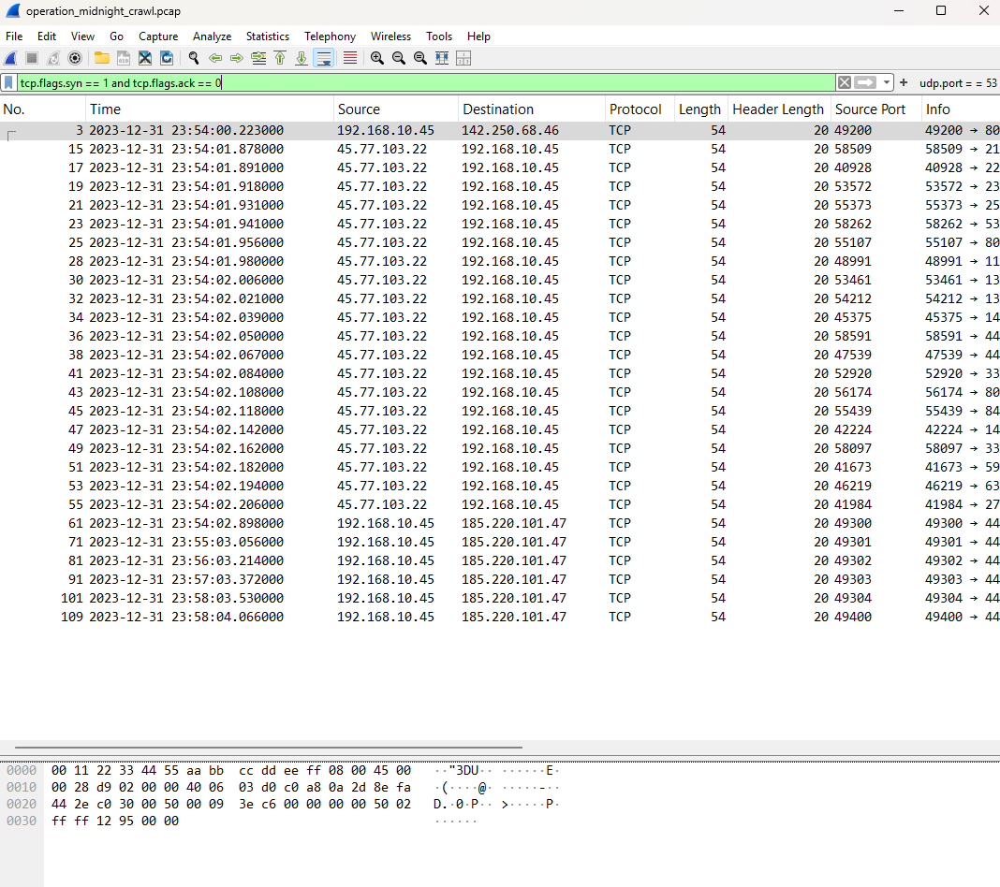
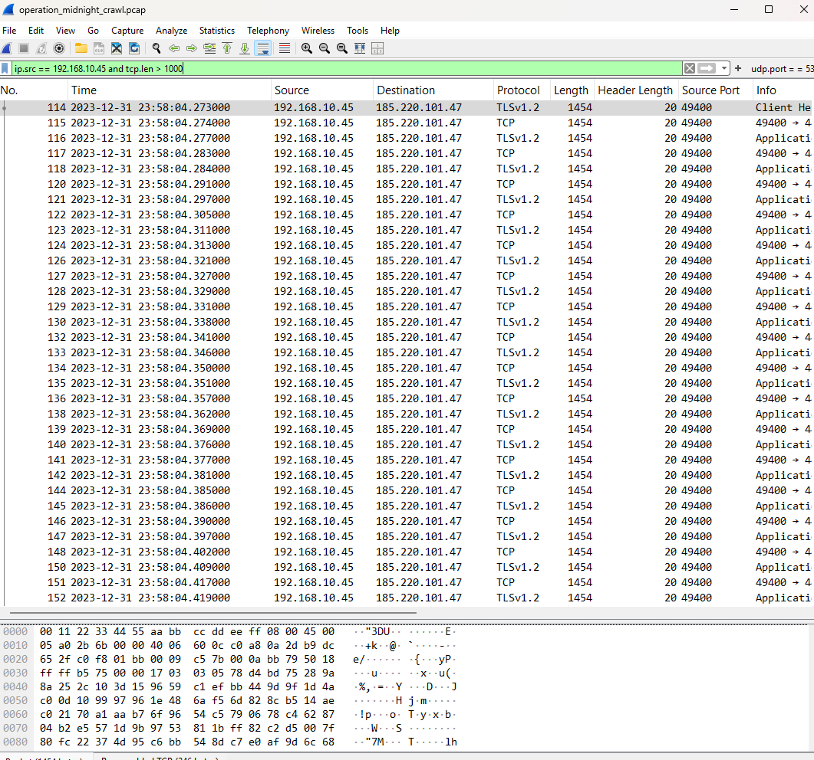
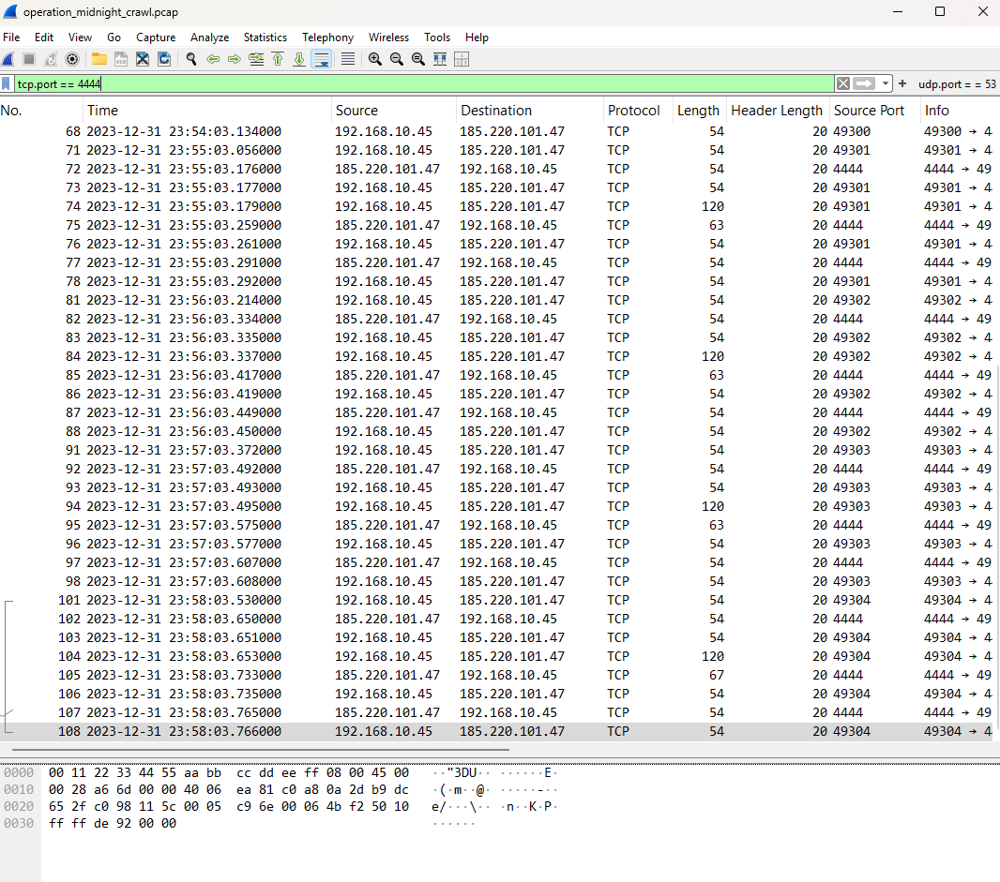

Overview
Most SOC tooling eventually points back to "go look at the packets." This case is about building that habit directly — capturing and reading raw network traffic in Wireshark instead of relying on summarized alerts.
Lab Environment
| Component | Detail |
|---|---|
| Capture Tool | Wireshark v4.6.6 |
| Capture Source | Sample PCAP file operation_midnight_crawl.pcap |
| Network Context | Packet capture analysis of a simulated network compromise, isolating traffic to investigate external reconnaissance, Command and Control (C2) reverse shells, and potential data exfiltration from a victim host. |
Methodology
- Orient with protocol hierarchy — opened each capture and reviewed Statistics → Protocol Hierarchy before drilling into individual frames, to understand the overall traffic mix first.
- Filter with intent — used display filters to isolate specific conversations and patterns rather than scrolling raw captures.
- Follow the stream — reconstructed full TCP/HTTP sessions using Follow → TCP Stream to see what actually happened end-to-end, not just that a connection occurred.
- Baseline vs. anomaly — compared a capture of "normal" traffic against a capture with suspicious activity to build a feel for what should draw attention.
Key Filters Used
ip.addr == 192.168.10.45
# Spot potential port-scan behavior (SYN without ACK)
tcp.flags.syn == 1 and tcp.flags.ack == 0
# Isolate all Domain Name System (DNS) query and response traffic
dns
# Identify potential Command and Control (C2) activity on a common reverse shell port
tcp.port == 4444
# Isolate large outbound data packets to identify potential data exfiltration
ip.src == 192.168.10.45 and tcp.len > 1000
Findings
Identified a comprehensive port scan originating from the external IP 45.77.103.22 against the victim host (192.168.10.45). The attacker rapidly cycled through common ports (such as 21, 22, 23, 80, 110, 135) using initial SYN packets, indicating active reconnaissance.
Discovered an active connection between the victim host and external IP 185.220.101.47 communicating over TCP port 4444. Because port 4444 is the default port for Metasploit/Meterpreter reverse shells, this strongly suggests the attacker successfully established a backdoor.
Detected a steady stream of large outbound packets (over 1,000 bytes each) originating from the victim host and destined for the same malicious IP (185.220.101.47). This sustained transfer of large payloads indicates the attacker was likely exfiltrating data or downloading additional stage payloads.
Wireshark Analysis
Screenshots from the packet analysis showing key findings and filter usage.

ip.addr == 192.168.10.45.

dns.

tcp.flags.syn == 1 and tcp.flags.ack == 0.

ip.src == 192.168.10.45 and tcp.len > 1000.

tcp.port == 4444.
Skills Demonstrated
Reflection
What surprised me most was just how noisy a raw packet capture is compared to organized system logs, highlighting how easy it is for an attacker to hide in the overwhelming volume of normal traffic. Seeing the reverse shell communication clearly established on port 4444 was a stark, eye-opening moment that made the abstract concept of a compromise feel incredibly tangible.